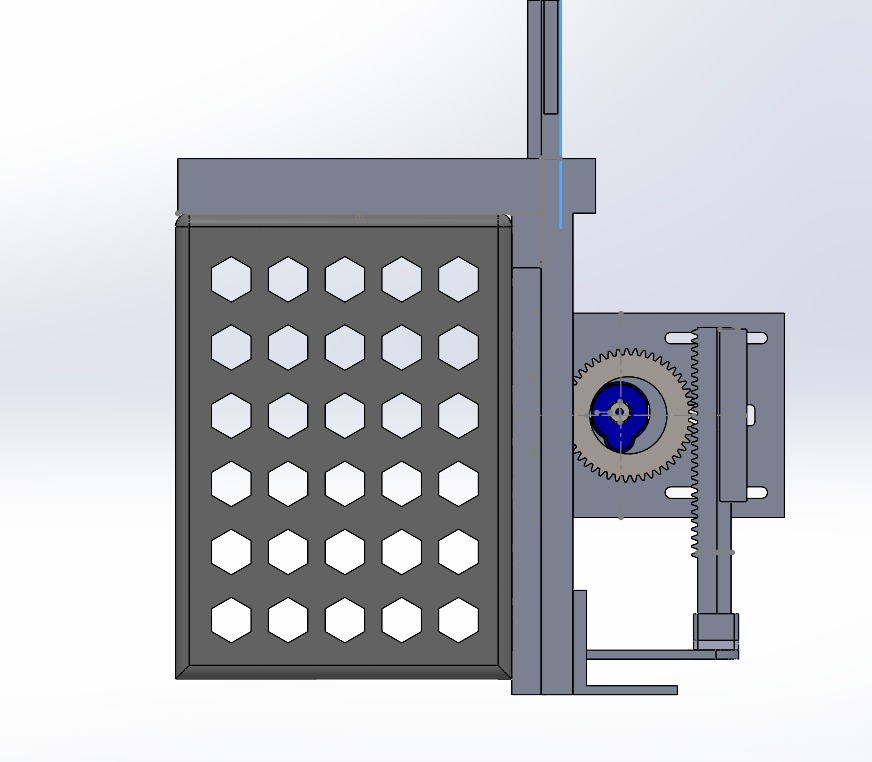
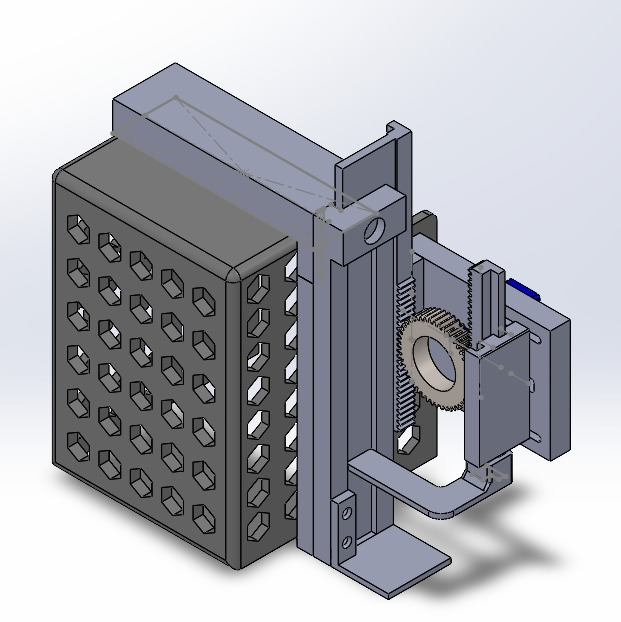
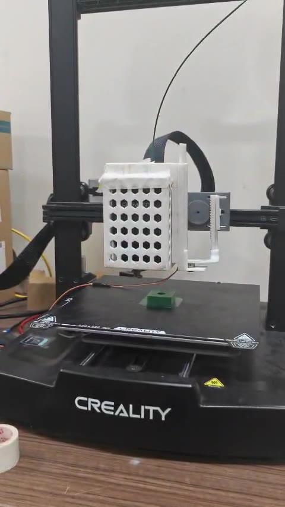
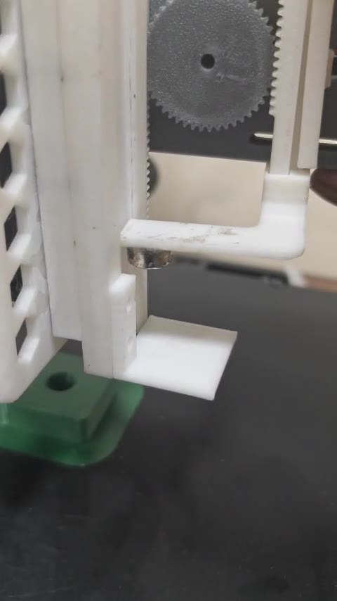
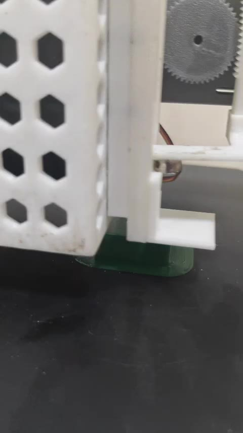

Magnets inside the print, placed mid-print.
An add-on applicator and a desktop control app that let a standard 3D printer pause at the right layer, place a permanent magnet into a printed pocket, and then print over it so the magnet is sealed inside the part.
Project by KL Mithunvel, Kiran T, Madhumitha V and Taja Pavan · B.Tech. Mechatronics and Automation, VIT Chennai
The problem
Embedding parts in a print is still done by hand.
Magnets give printed parts snap-shut lids, panels that stick to a frame, and alignment features. Today the usual method is to add a pause to the print, wait beside the machine, drop each magnet in by hand, and press resume. It ties up the operator, it is hard to repeat consistently, and every minute of pause risks nozzle ooze and a cooled part that bonds poorly to the next layer.
This project automates that pause, place and resume cycle on an off-the-shelf printer, so embedding a magnet becomes part of the print job instead of a manual interruption.
How a print runs
Four stages, one print job.
Print to the pocket
The part prints normally until the layer where its magnet pocket is complete.
Pause and park
The app stops the print safely, saves exactly where it was, and moves the head clear.
Place the magnet
The clip-on applicator delivers one magnet and presses it into the pocket as a press fit, then shears sideways away from it. The operator confirms the result.
Resume and seal
The head returns to the saved position and the remaining layers print over the magnet.
Hardware
A clip-on applicator for the print head.
First prototype, designed in SolidWorks and printed in-house. It mounts beside the nozzle and carries a magnet magazine and a servo-driven delivery mechanism. The applicator is kept lightweight so it changes the print head's dynamics as little as possible. Switching magnet sizes means swapping a single part.










Mechanism
One servo, one pinion, two racks.
An SG90 micro servo turns a single pinion. Two racks mesh with it on opposite sides, so whenever the pinion turns, one rack moves down while the other moves up. Each rack has its own job:
Dispense rack
Turning the servo one way drives this rack through its stroke and feeds one magnet out of the bottom of the magazine to the holding tip.
Release rack
Turning the servo back the other way drives the opposite rack, which frees the magnet from the holding tip once it is seated in the pocket.
The pocket is sized for a press fit. The printer pushes the magnet in with a slow Z move, and the tool then shears away sideways. The pocket walls grip the magnet, so it stays put while the tip slides off it. Lifting straight up could pull the magnet back out.
With one actuator doing both jobs, the add-on stays light and needs a single control signal from the Arduino. The magazine stack then drops by one, ready for the next insert.
Schematic, not to scale. Rack travel follows the pinion: travel = pitch radius × rotation angle.
| Part | Role |
|---|---|
| SG90 micro servo | Single actuator, driven by the Arduino Uno |
| Pinion | Mounted on the servo horn; turns both racks |
| Dispense rack | Feeds one magnet from the magazine to the holding tip |
| Release rack | Frees the press-fit magnet before the tool shears away |
| Magazine | Stack of 40–50 magnets, Ø6–10 mm × 3 mm |
| Size insert (swappable) | The one part changed to switch magnet diameter |
Insert cycle
What happens at the pocket layer.
Side section view of one insert. The applicator tip sits to the side of the nozzle, so the printer moves the nozzle to pocket position minus tool offset to put the tip over the pocket. The bar under the drawing shows the commands the app sends during each phase.
3D simulation
The whole insert, on the machine.
The planned insert from the control app, drawn on a model of the Ender-3 V3 SE with the applicator fitted. Like the real printer, the bed slides in Y while the head moves in X and Z. Play it, scrub it, or drag to orbit and scroll to zoom.
Built from the CAD and photos. The tool offset (X +52, Y −36.8 mm), the toolpath and the magnet diameter, taken from the printed pocket, come from the measured data; other proportions are approximate.
Software
A control app that runs the whole job.
A Python desktop app (Tkinter) on a Windows PC talks to the printer and the Arduino over USB serial and drives the print from start to finish, including the insert. The printer's own Marlin firmware is used as shipped.
System layout
G-code lines /
oktext commands
Talking to the printer
The app sends one G-code line, waits for the printer to answer ok, then sends the next. Replies of busy: processing or wait are normal and just mean keep waiting; no reply at all for 30 s is treated as a fault. Because ok only means a move was queued, every step of the insert ends with M400, which holds the reply until the head has really stopped. Pausing is simply not sending the next line, so the printer holds position and temperature.
| Command | Used for |
|---|---|
M115 | Handshake after the port opens (2 s settle), confirms the firmware is answering |
M114 · M105 | Read position and temperatures; polled every 2 s while idle |
G0 / G1 X Y Z E F | All motion: printing, jogging, park, approach, press, release |
G90 / G91 · M82 / M83 | Absolute or relative axes and extruder; saved before an insert and restored after |
M400 | Wait until all motion is finished |
M104 / M109 · M140 | Nozzle set / set-and-wait (standby 160 °C during the pause), bed temperature |
G92 E | Restore the extruder position so the print continues seamlessly |
G4 P500 | Dwell for 0.5 s at the bottom of the press |
G28 | Homing, only before a print (never during one) |
M851 + M500 | Save the Z-offset found with the guided paper test |
M112 | Emergency stop button: heaters and motors off immediately |
Talking to the Arduino
Plain text lines, one command and one reply. Opening the port resets the Uno, so the app waits about 2.5 s and pings until it answers.
| PC sends | Uno replies | Meaning |
|---|---|---|
PING | PONG | Link check |
DISPENSE | OK DISPENSE or ERR DISPENSE <reason> | Run the servo stroke for one magnet |
RESET | OK RESET | Return the servo to its home angle |
STATUS | STATUS servo=.. count=.. last=.. | Servo angle, magnets dispensed, last result |
Import and view G-code
Slice the part with a pocket in Creality Print (Cura and PrusaSlicer files also work) and load the .gcode into the app. It parses every move into a toolpath with layers, printing versus travel moves, distances and an estimated time, then shows it three ways: a single layer from above with a layer slider, a side view, and a 3D view. The insert motion can be played and scrubbed over the part before anything moves. While printing, a live view draws the current layer in 2D and the part in 3D side by side, growing as the nozzle passes and redrawn about 6–7 times a second, with a Global bed or Local part zoom.
Plan the insert
The Plan magnet insert dialog takes the pocket X/Y, the seat height and the direction the tip leaves in, previews the motion live, and checks it. It then saves a *.magnet.gcode copy with one comment line at the pocket layer, for example ;MAGNET_INSERT X110 Y110 Z6 S-X. The printer ignores comments, so the file still prints normally from a microSD card. The app watches for this line while streaming and runs the insert sequence when it reaches it.
The insert sequence
| Phase | Commands | Why |
|---|---|---|
| Save | reads state | Remember position, extruder count, modes, feed and temperatures |
| Park | M83 G1 E-3 G90 G1 Z+15 M400 M104 S160 | Retract to stop ooze, lift clear of the part, drop to standby temperature |
| Dispense | DISPENSE → Uno | Servo stroke feeds one magnet to the tip |
| Approach | G1 X Y M400 | Nozzle goes to pocket − tool offset, so the tip is over the pocket |
| Press | G1 Z F60 G4 P500 M400 | Slow push to the seat height, short dwell so the magnet seats |
| Shear | G1 X/Y ±5 F1200 M400 | Tool slides sideways off the press-fit magnet; the pocket walls hold it in place |
| Lift | G1 Z park M400 | Get clear so the operator can look |
| Confirm | prompt | Operator answers Success, Retry (up to 3, back to Dispense) or Abort |
| Resume | M109 G1 X Y G1 Z G1 E G92 E modes | Reheat, return to the saved spot, un-retract, restore everything, keep streaming |
The printer is never homed during a print, since homing would drag the nozzle across the part. If anything fails mid-sequence, the nozzle temperature is still restored so the print can be resumed.
Point-to-point movement
For hands-on trials, the panel has a point list. Jog the head to a spot and press Add point; P1 is the start. Each point can have its own feed (10–15000 mm/min), a delay (0–600 s) and an action: go to pass through, or stop to wait for the operator. Play visits P1 → … → Pn in straight moves (with loops and an optional return to P1), and Go to uses safe travel: lift to the highest Z in the list, slide in X/Y, then lower. Every point is checked against the 220 × 220 × 250 mm build volume, and lists save and load as JSON.
Safety built in
- Reach checkRefuses any insert that would send the carriage outside the build area.
- Bed checkRefuses a press that would drive the nozzle into the build plate.
- Part checkUses the printed outline from the G-code to refuse plans where the offset nozzle would land inside the part.
- Emergency stopAlways one click away, sends
M112even mid-move. - Safe cancelRetracts, lifts, parks and turns the heaters off.
- Simulator firstA simulated printer and Arduino answer like the real ones, so every path was tested on a laptop.
The same checks run in the plan dialog, the preview and the real run, so they can't disagree.
First trial
26 October 2026, on the printer.
The first hardware run used a 30 × 30 × 10 mm PETG test cube (0.12 mm layers, 83 layers) with a 10 × 10 mm pocket centred at X110 Y110. The pocket floor is at Z ≈ 6.0 mm and its walls rise about 4 mm. For this trial the insert motion was driven by point-to-point playback rather than the automatic sequence, which made it easy to adjust each position by hand.
| Point | X / Y / Z (mm) | Purpose |
|---|---|---|
| P1 | 96 / 118 / 11.24 | Start, and final return |
| P2 | 56 / 118 / 18.24 | Clear of the part |
| P3 | 55 / 147 / 18.24 | Staging above the drop |
| P4 | 58 / 146.8 / 6.04 | Insert, 8 s hold |
| P5 | 19 / 147 / 6.24 | Shear away in −X |
| P6 | 19 / 147 / 15.24 | Lift |
At P4 the tip was over the pocket centre, so the applicator's offset from the nozzle can be read straight off the recording:
Aligned by eye, so good to roughly ±1–3 mm. These values go into the app's tool offset for the automatic runs.
Status